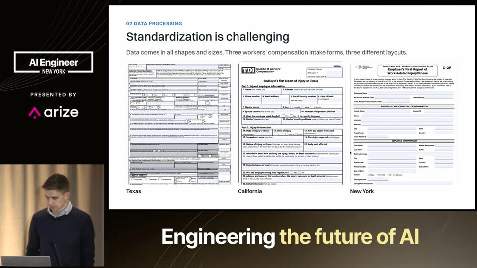
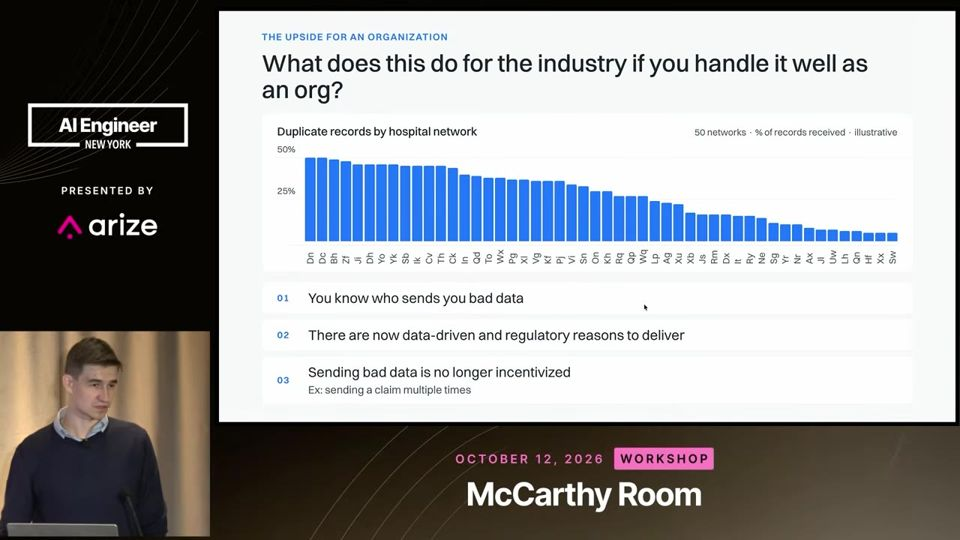
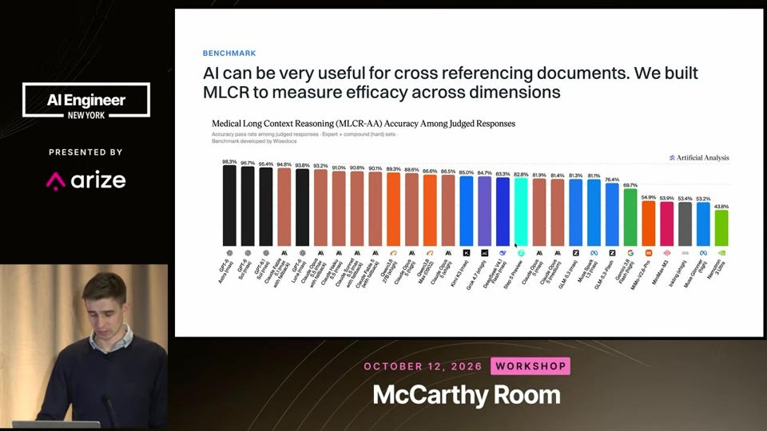
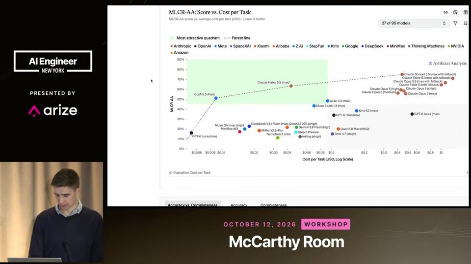
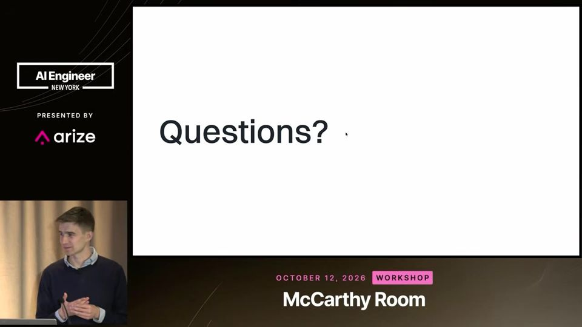

Insurance Claims Are AI's Messiest Data Problem
Em seguro, IA útil depende de dado limpo primeiro; o modelo só rende no topo de uma pilha verificada por humanos.
Em 3 frases
Denys Linkov, da Wisedocs, mostra que sinistros médicos chegam como fax, PDF de 8 GB, duplicatas e registros misturados, e que isso trava qualquer projeto de IA.
Ele propõe três passos: limpar os dados, analisar dentro de cada documento e cruzar informações entre sinistros para decidir preço, rede de médicos e fraude.
A empresa criou com a Artificial Analysis o benchmark MLCR para registros médicos, e a acurácia máxima subiu de 20% para 75% em poucos meses, sempre com humano revisando.
Antes de ler
Formulários diferentes em cada estado
Um sinistro de acidente de trabalho usa um formulário distinto em cada estado americano, e as versões mudam. Mesmo com layout previsível, os campos variam. Sem padronizar essa entrada, nenhuma análise entre sinistros funciona.

Dado sujo é o gargalo real
Duplicatas chegam a 50% ou mais em algumas jurisdições, registros de pacientes homônimos se misturam e há PDFs de 8 GB que nem cabem em uma janela de contexto. Sem detectar esses problemas, o modelo trabalha em cima de lixo.

MLCR: benchmark em seis níveis
O MLCR tem seis níveis de perguntas sobre sinistros médicos, de 'quando foi a lesão' até questões complexas. Mede concisão, acurácia e completude contra resposta validada por especialistas. Os três primeiros níveis são abertos e o resto fica privado para evitar treino direcionado ao teste.

Mais 2 ideias deste talk
Modelos trocam acurácia por completude
Nos testes, os modelos da OpenAI acertaram mais, mas omitiram informações. Os da Anthropic foram mais completos, com acurácia um pouco menor. A completude segue sem solução na maioria dos provedores, e os juízes de IA foram calibrados com resposta humana.

Pilha que concentra informação até o topo
A Wisedocs usa OCR e imagens, depois modelos de extração, VLMs e classificadores, depois um resumo verificado por humanos e só então camadas de análise. A informação fica mais densa a cada nível e é checada em vários pontos. O MLCR roda sobre dado já limpo.

O talk é parcialmente pitch da Wisedocs. O benchmark MLCR é da própria empresa, feito com a Artificial Analysis, e não aparece amostra, número de perguntas nem margem de erro. A frase sobre 70% menos preocupação regulatória com humano no loop é opinião, sem fonte. O palestrante admite no Q&A que não reduziu o tempo médio de sinistro em toda a indústria e remete a estudos de caso no site, sem números no vídeo. O salto de 20% para 75% compara níveis de raciocínio diferentes, sem detalhe.
O que fazer com isso
- Antes de plugar IA em documentos, meça no seu fluxo a taxa de duplicatas, registros misturados e arquivos gigantes.
- Monte um eval (avaliação) com respostas validadas por especialista e calibre o juiz de IA contra elas antes de confiar na nota.
- Compare modelos em acurácia e completude separadamente, porque o mais preciso pode omitir dados importantes.
- Mantenha revisão humana em decisões sensíveis e deixe a IA apontar o que revisar, como diagnósticos conflitantes entre páginas.